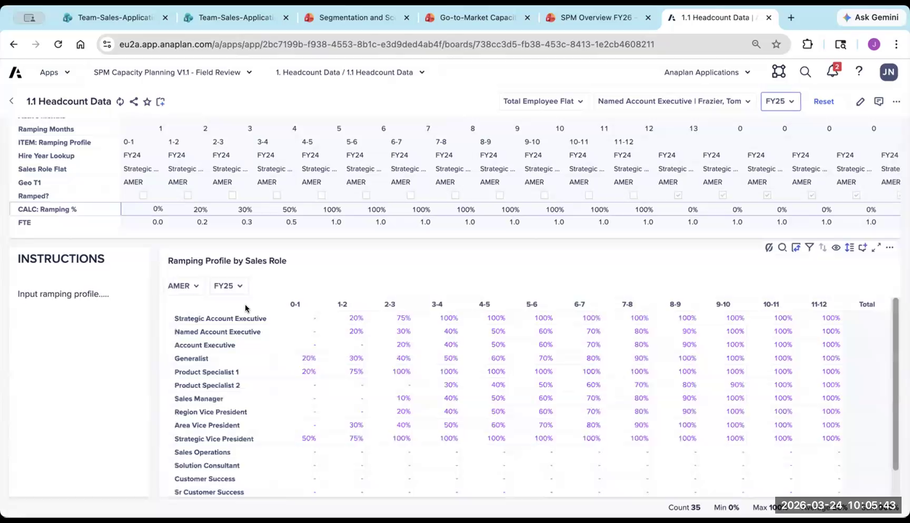
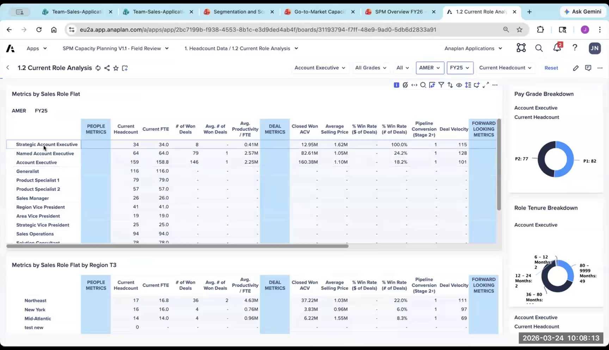
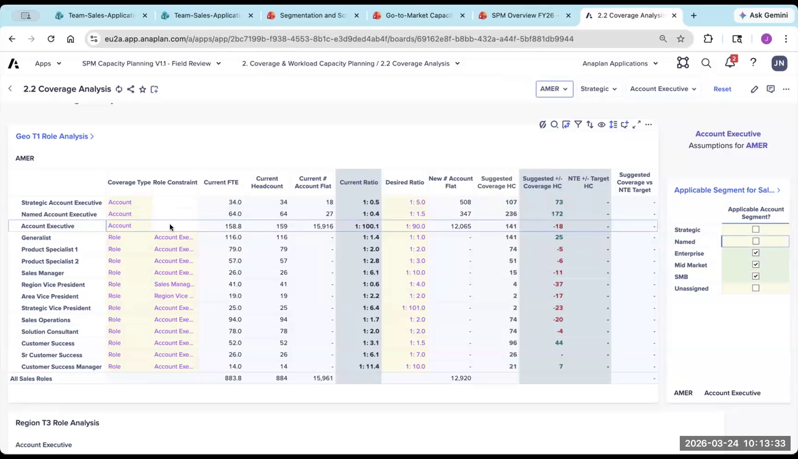
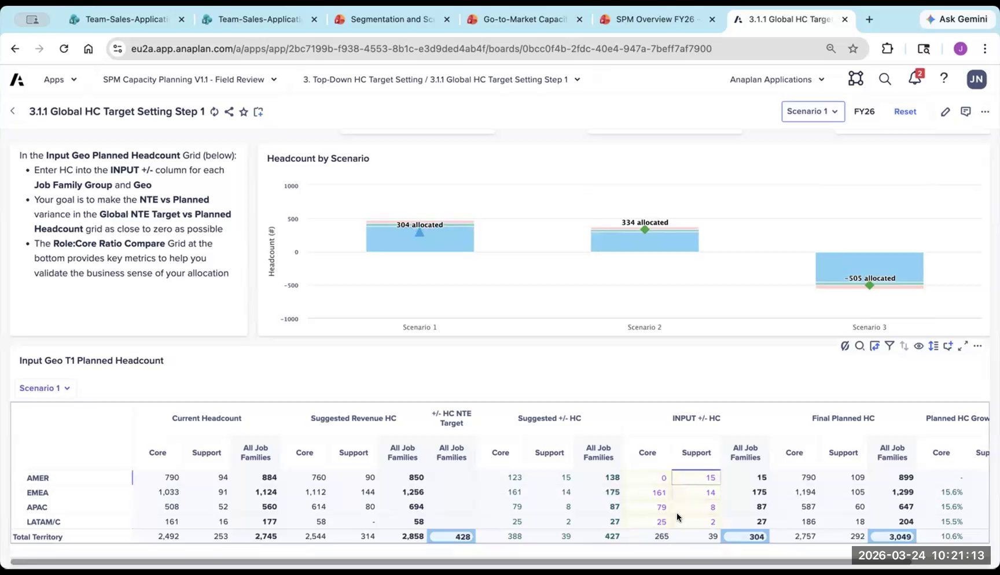
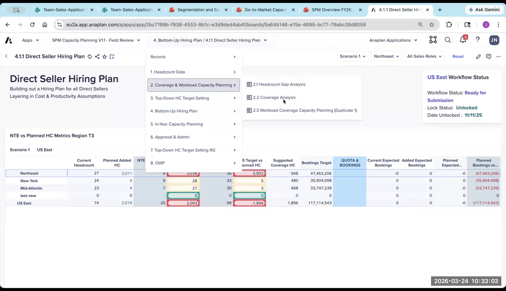
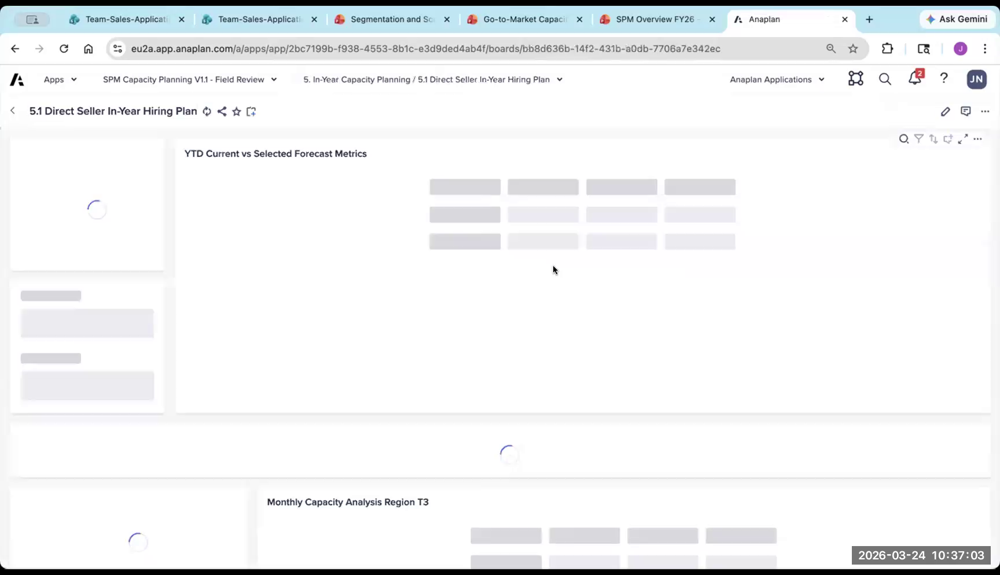

Go-to-Market Capacity Planning App: End-to-End Walkthrough
Understanding the generated Capacity UX application
The Capacity app answers one question: how many people do I need to hire, when, and where, to hit my revenue target? It combines tops-down guardrail setting (finance-driven) with bottoms-up tactical hiring planning (field-driven). The core output is a month-by-month hiring plan by role and geography.
App Overview
- Access the Capacity UX Demo App in your partner workspace
- The app is highly scenario-driven — multiple scenarios appear on almost every page
- Always check workflow status (top right) before making changes — locked scenarios can't be edited

1. Data & Role Setup
Ramp Profile by Sales Role
For each sales role, define the monthly productivity ramp — what percentage of full productivity the rep operates at in each month of tenure.
- Example AE ramp: Month 1 = 0%, Month 2 = 20%, Month 3 = 50%, Month 4 = 75%, Month 5+ = 100%
- FTE = active headcount × revenue profile for that month (based on hire date)
- Hire date rule: hired in the first half of the month → ramp starts that month. Hired in the second half → ramp starts next month.
- This drives all productivity calculations downstream — get this right first
Historical Performance by Role
- Shows historical win rates, average deal size, and velocity by role and configured dimensions
- Non-direct seller roles (overlay, CS) may have blank tables — they're not attached to opportunities directly
- Use to baseline productivity assumptions: "average AE closed $X last year → inform next year's productivity model"

2. Coverage & Ratios
Define which roles cover which account segments, and at what ratio.
- Account-based coverage (direct sellers): 1 AE per N accounts
- Derived coverage (overlay/support): 1 generalist per N AEs, 1 manager per N AEs
- Segment mapping: shows account counts in each segment — this is the critical connection point to the Segmentation app

3. Tops-Down Planning (NTE Setting)
Concept: Finance provides a revenue target + budget. Working from the top of the geo hierarchy, you allocate headcount guidance downward — creating Not-to-Exceed (NTE) numbers that constrain the bottoms-up plan at every level below.
Process (multi-step, top to bottom)
- At the geo level (all Americas): Plan Core vs. Support headcount by Job Family Group
- Within Core: Break down by Job Family (AEs, Managers, Pre-Sales, Overlay, CS)
- Last level: Break down to Sales Role level (Strategic AE, Commercial AE, etc.)
At each step: suggested headcount is shown (calculated from coverage ratios + productivity assumptions), plan headcount is entered, and the system flags if you're significantly over or under the suggestion.
Workflow: submit/lock each level when done — this creates the NTE for the level below. Once locked, the level below cannot exceed it without a workflow change request.

NTE visual: Bar chart showing planned vs. suggested headcount across scenarios. Green = within NTE, red = over.
4. Bottoms-Up Planning (Tactical Hiring)
Concept: Planners at the territory or geo level enter their actual hiring plan month-by-month, constrained by the NTE from tops-down. The model answers: if you hire these people on these dates, with this ramp, will you hit your revenue target?
The Holy Grail Page
- Shows: current headcount, NTE ceiling, and planned hires by month
- Visual: rolling revenue target line vs. projected revenue contribution from planned headcount (factoring in ramp + productivity)
- Goal: close the gap between your current team's projected output and the revenue target by hiring the right people at the right time
- Timing matters: hire someone in January vs. April = months of ramp difference = material revenue impact on the year

5. Snapshots & In-Year Comparison
- AOP snapshot: Take a snapshot of the annual operating plan when it's finalized — locks the baseline
- In-year comparison: As the year progresses, compare actual hiring vs. AOP snapshot
- Example: "I planned to hire 3 people in Q1. I actually hired 5. Here's the revenue impact of that over-hiring."
- Useful for quarterly business reviews with leadership — shows plan vs. actuals in headcount and revenue

6. Non-Direct & Derived Roles
- After planning direct sellers, derived roles (managers, generalists, overlay) are calculated automatically based on configured ratios
- You can still override timing and specific numbers for non-direct roles if needed
- Scenario comparison: Run side-by-side views of different hiring scenarios — e.g., conservative vs. aggressive AE hiring, compare the revenue trajectory difference
7. Cost Analysis & Reporting
- Cost assumptions (salary, benefits, draw) feed into cost modeling
- Financial liability page: Models when you "earn back" the cost of a hire based on their ramp and seasonality — the "payback period" for each hire
- ROI analysis: If I add a product specialist overlay to a region, what's the incremental revenue impact vs. the cost?
- These are backend-heavy pages — not primary customer demo material but useful for finance and RevOps discussions
What to Demo to Customers (20–30 min)
- Ramp profile — show the productivity assumptions by role
- Coverage ratios — show the segment-to-role mapping and the explicit connection to Segmentation outputs
- Tops-down (one level) — show the NTE concept and the suggested vs. planned headcount
- Bottoms-up holy grail page — hire X people, see the revenue gap close in real time
- Scenario comparison — show two scenarios side by side
Using what you just walked through:
- Design a 15-minute demo for a VP of Sales Finance who wants to know "how many reps do we need to hire next year?"
- Start with tops-down (finance perspective) or bottoms-up (field perspective)? Why?
- How do you explain ramp profiles to a non-technical customer in one sentence?
- What's the workflow status check you should always do before making changes?